Supported Services¶
Where the notifications are sent - the Configurator Tool is used to enable and “configure” any of these. If the notification needs to just go straight to your smart phone, then Pushsafer or Pushover would be a good start. For more advanced users, UDP or MQTT can be used, but these require a central gateway (rapsberry Pi or host AP)
Pushsafer¶
Pushsafer Setup
Go to Pushsafer.com and create an account - you’ll need to download/install the app as well
Copy the private key:
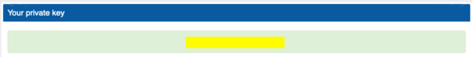Paste that in the Configurator:
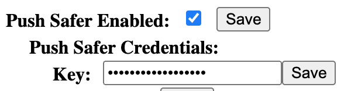
Pushover¶

Pushover Setup
Go to pushover.net and create and account - you’ll need to download/install the app as well
You should see your private user key:
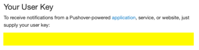Scroll down and create a new application:
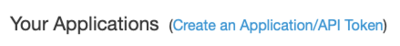Can leave things the way they are - name whatever you want:
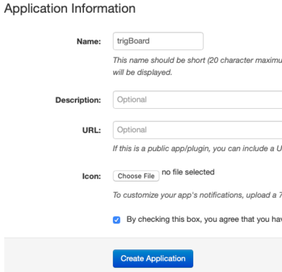Then you should see the API Token:

Paste both of those into the Configurator:
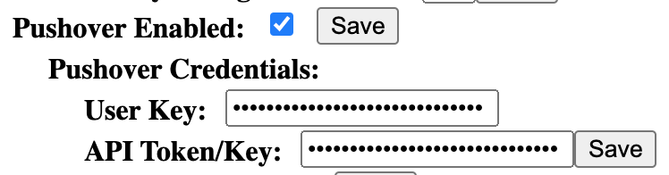
Sharing Notifications¶
If you want to share notifications with someone else, but not give them your login credentials, you can do that easily with Pushover. Just note that if you ever plan on doing this, you should set this up ahead of time. The user key will be different from the above steps, so you would have to change that on the trigBoard. You would then be a subscriber to this feed yourself.
Follow the same steps as above to setup the application - in that screen, you can create a subscription code:
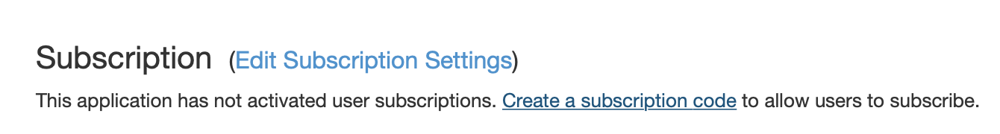
Then fill out that screen and create new delivery group:
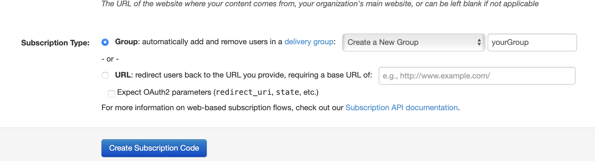
Then you’ll notice in your application window, you have a new URL there that you can send people to subscribe to that feed:
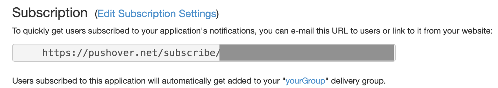
But the thing about this is that the user key that you use for the configurator needs to be for this delivery group. To find this key, you can click below that URL - in this case the “yourGroup” link there:
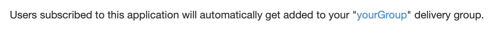
There you will see the group key to be used as the user key in the trigBoard configurator - you still use the same API/Token Key from when you created the application:
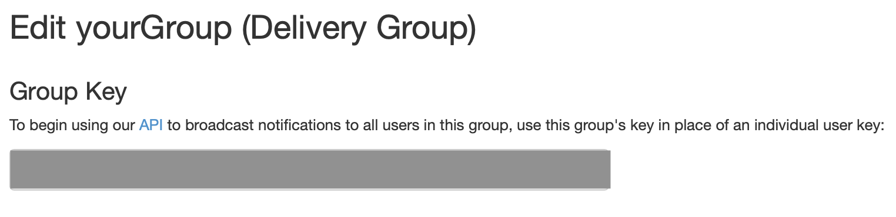
And that’s all there is to it!
IFTTT¶
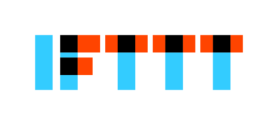IFTTT Setup
Go to IFTTT.com which stands for “IF This Then That” and is a very powerful integration service that allows an event from the trigBoard to connect to other IoT services, like send an email, text, update a google spreadsheet, turn lights on/off, etc… It requires a maker key in order to work, so first sign up or sign in using whatever option you want to use. I use google to login.
Search for webhooks, then click services:
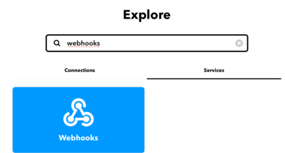Just click on the webhooks service, click connect, and should be good to go. You should then see a “documentation” button:
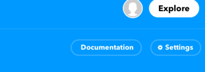Here you will see the maker key:
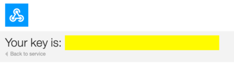Then it’s pretty easy to setup the IF this then That recipe. Just use the web hook for the IF event, where the Event Name is what is given as the trigBoard name in the configurator (no spaces), then the Value 1 is the name, Value 2 is the message.
Paste that maker key into the configurator:
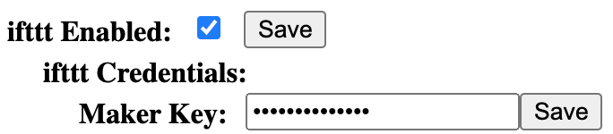
UDP/TCP¶
Note - TCP added to Firmware version 12/20/20 or newer. These two options allow for a fully customized solution to whatever you might have in mind. For example - see the Cellular/Battery Backed System project - this is a fully self contained system that relies on no outside services. It’s battery backed, hosts its own network, and can still send push notifications out fast. This is just an example though - even a simple point to point system can be easily designed. The trigBoard supports both UDP and TCP - here’s a good write-up on the differences.
To build your own gateway, here is some sample code you can use to run on an ESP32 to act as a server. It supports both UDP and TCP: Github Repo
Note - you will need to install the ESPAsyncWebServer and AsyncTCP Libraries
How it all works explained here:
UDP¶
Because UDP is connectionless, the trigBoard configuration allows for a “blast”, the default is to send out 10 packets separated by 10ms. The idea is that this blast of packets guarantees at least one will get through. There is no handshaking or acknowledgment back to the trigBoard, so it simply sends all of the packets and goes back to sleep. This means the transmission will be faster, thus keeping the on-time shorter and conserving battery life. Then again, without any knowledge that any of the packets got through, there’s a chance they didn’t.
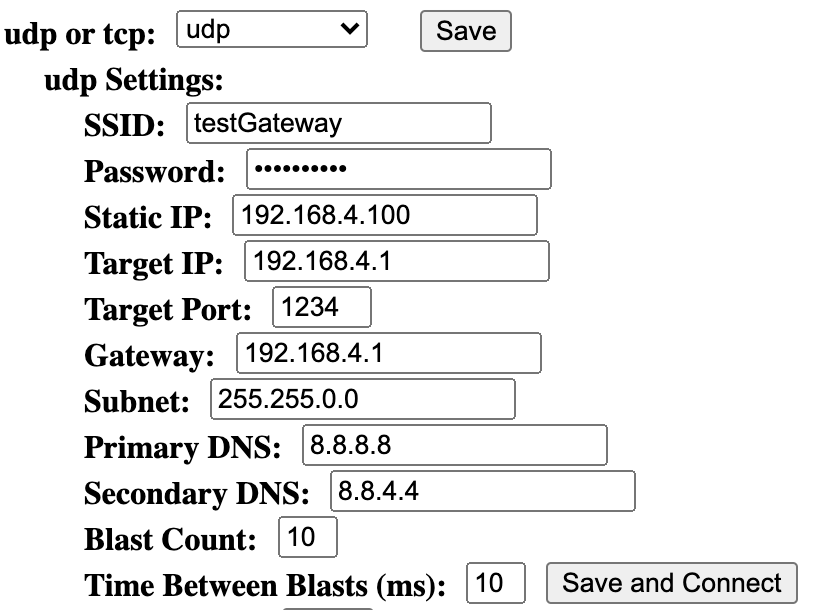
You can leave most of these settings to their default values. Just set the SSID/PW, and if you’re using the gateway as the access point, then that would default to 192.168.4.1, which is also the target IP. Because connection speed is important here, select a static IP, which I normally use 192.168.4.100, 192.168.4.101, etc… Here’s a good subnet calculator
The message sent out is formatted like this: “<trigBoard Name> <Event>, <battery>” or as a real example: “test trigBoard 1 Contact Still Open-18-, 4.14V”
TCP¶
This was added in Firmware 12/20/20 - make sure you have the latest Firmware Installed
The inspiration for adding TCP messaging came from the need for an ultra reliable home security system. The only downside here is that TCP may hurt battery life slightly since a full handshake between the trigBoards and receiving device occurs on every event. Also, if the handshake fails, the trigBoard will attempt a number of retries.
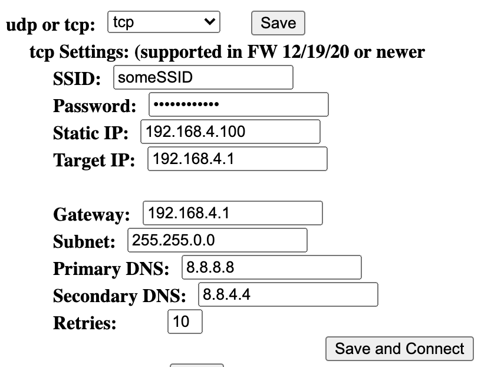
The settings here are very similar to UDP, set the SSID/PW for the gateway and set target IP and static IP. Note that the port is fixed to 80. The retries value is how many full attempts the trigBoard will make before going back to sleep. This actually reconnects to the SSID, so be careful setting the WiFi Timeout value above - may want to lower this in case you loose the gateway or make a mistake in here and the board cannot connect. That means that to re-enter the configurator mode, you will have to wait for all failure attempts. So if WiFi timeout is 10seconds, and retries is 10, then you’ll need too wait for 100seconds. This of course is only if it can’t connect.
The message sent out is formatted like this: “<trigBoard Name> <Event>, <battery>$$$<timestamp>” or as a real example: “test trigBoard 1 Contact Still Open-18-, 4.15V$$$34743” the reason for the unique timestamp there is just in case the gateway receives the message, but then a retry is attempted. So that means that the acknowledgment back to the trigBoard failed and it attempted the retry. The gateway will see the same message and know that the trigBoard is just trying again, not that it’s a unique event from that same trigBoard, which would be like the front door opening and closing twice quickly.
MQTT¶
Similar to UDP, but if you’re using the raspberry pi or something to run your home automation system, and it’s all based on MQTT messaging, then this will work great for that. This was added in at the request of support for Home Assistant (not tested though)